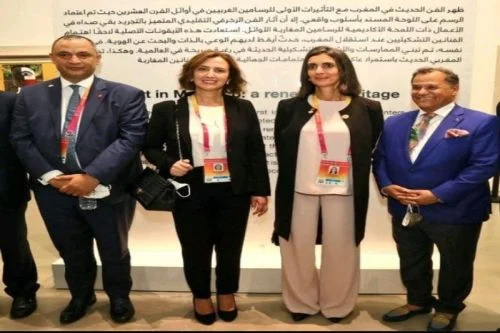

culture
Le chercheur marocain Mohamed Zoubairi parmi les lauréats du Prix Sharjah de la critique des arts plastiques

La Chambre Nationale des Producteurs de Films (CNPF) a appelé à soutenir et à développer l’action des salles de cinéma au Maroc. Cet appel a été lancé lors d’une séance de travail, tenue mardi, entre la délégation de la CNPF et le ministre de la Jeunesse, de la Culture et de la Communication, Mohamed Mehdi Bensaïd durant laquelle plusieurs sujets importants ont été abordés, en l’occurrence, la situation du secteur cinématographique dans toutes ses composantes et les moyens de le réformer et développer son parcours, indique un communiqué de la Chambre..
Le chercheur marocain Mohamed Zoubairi parmi les lauréats du Prix Sharjah de la critique des arts plastiques

Le chercheur marocain Mohamed Zoubairi figure parmi les lauréats du Prix Sharjah de la critique des arts plastiques. La direction de cette 12ème édition a précisé mercredi que lors de cette compétition culturelle organisée sous le signe « La distance entre arts plastiques et scénographie », Zoubairi s’est classé en deuxième place grâce à son oeuvre intitulée « Arts plastiques et scénographie, de l’accompagnement à l’identification ».
Mehdi Qotbi: Le monde célèbre le Maroc à L'Expo universelle de Dubaï
Dimanche dernier, ont été lancées les festivités marquant la Journée nationale du Royaume du Maroc à l’exposition universelle Expo 2020 à Dubaï. Pour Mehdi Qotbi, président de la Fondation nationale des Musées (FNM), c’est le monde qui « célèbre aujourd’hui solennellement le Royaume à travers des spectacles de grande envergure, dont celui des Forces Royales Air (FRA) qui ont « illuminé le ciel de Dubaï de mille étoiles marocaines ». Se réjouissant d’être « témoin d’un spectacle aussi magnifique » qui met à l’honneur le Royaume, Qotbi a estimé qu’il s’agit là « d’un moment et une consécration extraordinaires ». Le président de la FNM a également souligné que la « joie est d’autant plus grande de voir l’exposition organisée par la FNM orner le pavillon marocain, avec des artistes, des couleurs ainsi que de l’histoire de la peinture marocaine ».